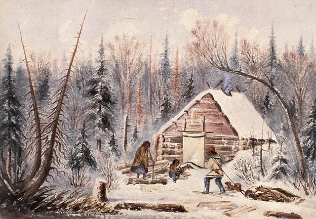
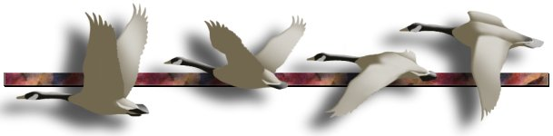
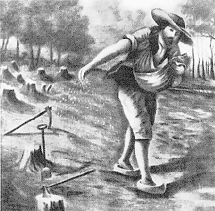
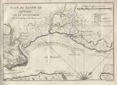
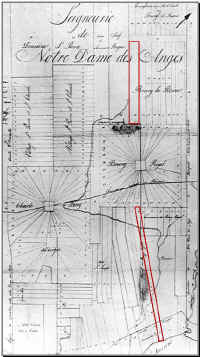
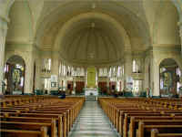
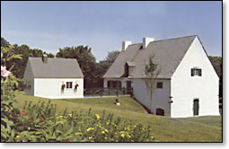
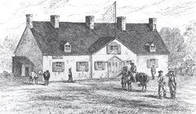
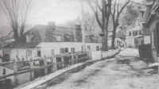

|

MATHIEU CHORET, SEIGNEURY OF
NOTRE-DAME-DES-ANGES
|
Mathieu's
land touches the river, on the bay of Beauport, over
about 575 feet of frontage (3 arpents). It runs
about 12 miles (4 leagues) deep to the north, taking in the
first foothills of the Laurentians.
It is a huge piece of land of 1,000 arpents.

|
| WHAT IS THE SEIGNEURY OF
NOTRE-DAME-DES-ANGES?
Henri de Lévy, duc de Ventadour, viceroy of New France,
grants the Seigneury of Notre-Dame-des-Anges to the Jesuit fathers
on March 10, 1626. From west to east, the seigneury stretches from
the Saint-Michel stream, upstream of the Lairet river, to the Beauport
river. The Saint-Charles river separates it from another seigneury of the same name
granted to the Recollets on the opposite bank (where
the Hôpital Général still stands).
The
Jesuits' seigneury is one league wide by four
leagues deep. They set up their farm,
Notre-Dame-de-Bonsecours, between the Beauport river and the stream of
the cabane aux Taupinières (the ruisseau du
Moulin, or Mill Creek), that is,
the area that is now Giffard.
In 1629, the capture of the colony by the Kirke brothers halts
the first phase of settlement. Forced to go back to
France, the Jesuits return three years later, after the signing of the treaty
of Saint-Germain-en-Laye. They
first rebuild their residence (on the present
site of Parc Cartier-Brébeuf), then hand out land
to settlers willing to clear it. These first
lots are cut into long strips along the
river (at La Canardière) and the plain of the Saint-Charles
river.
 When Mathieu Choret comes back to New France in 1647
with his wife Sébastienne Veillon, the lands near
Québec are all taken, so the Jesuits grant him
land at the eastern end of their seigneury, near their
farm. The contract
is signed in March 1649, and it reads: "three arpents
of land fronting on the Great River Saint Lawrence of
New France and four leagues deep into the woods,
..." The ruisseau du Moulin runs straight across
part of Mathieu's land. This 8.8 km stream rises
at the Montagne des Roches and flows into the bay of
Beauport.
Mathieu and Sébastienne live a
hard life and make remarkable
efforts to clear and sow their land. Their
children are born there and, season after
season, their way of surviving lets them win their wager. With no future in France,
the couple builds a better world here for themselves and their
descendants.
|

Map of 1709 by Gédéon de Catalogne
|

Bellini's map of 1744,
which clearly
shows the Bay of Beauport
|
Mathieu's land covers 1,000 arpents.
This huge piece of land is the cause of a dispute
between him and the heirs of Guillaume Couillard. At
the request of Sieur Robert Giffard, to avoid a
quarrel, Jean Guion Dubuisson is hired to survey
the land on Wednesday, April 12, 1662. Since it encroaches
on the Couillards' land, it has to be realigned,
which is done on Friday, February 22, 1664. To give
everyone their due, the Jesuits agree to orient
the last two leagues of their grant
differently.
Meanwhile, on August 17,
1663, Charles de Lauzon grants Mathieu
Choret a piece of land in his seigneury on the île d'Orléans.
Mathieu cannot enjoy it for long, since he dies on March 27,
1664. In the census of 1667, his eldest son Robert is found
on
the île d'Orléans
on a two-arpent farm, no doubt his father's.
Mathieu, who had no future in France, became, in his new country, the owner of
lands that he
left to his heirs, who carried on his
work.
|
|

|

|
|
Detail of the plan of the Seigneury of
Notre-Dame-des-Anges drawn up by Ignace Plamondon in March 1754.
It shows that the land is sometimes divided differently
than on Catalogne's 1709 map. Among
other things, the part of Mathieu's land south
of Bourg-Royal has been cut up. I have tried to draw the
lines of Mathieu's land as seen in 1709. |
|
|
BUT WHERE EXACTLY
IS MATHIEU'S
LAND?
That is the interesting
question. Several founding-family associations have
put up a commemorative plaque or a monument on their
ancestor's land. There is nothing like that yet for the Charette
family. So we have to work it out as amateurs.
The documents say that Mathieu's land
was roughly where
the Giffard church stands today. That parish
dates from 1914, when it was split off from Beauport parish.
|

|
Here are two photos of the Giffard church found on
the web.
|

|
NOW LET'S TRY TO
LOCATE MATHIEU'S LAND
|

Map of 2005
|
|
Try, by eye, to match the
outline of Mathieu's land, as seen on the 1709 map,
with this recent map, starting from the bay of Beauport,
taking in the Giffard
church, and drawing a slightly diagonal line to end up
west of the centre of Bourg-Royal, while also keeping in mind
the stream that appears on both maps...
N.B. at the top right you will find rue Ampère, which
should become rue Mathieu-Choret in 2006,
if Québec City adopts its plan to rename
duplicate street names after the municipal
mergers. |
Of course, all this is only approximate,
and far from a surveyor's work. But it still
gives us a very good
idea of where Mathieu's land was.
A
lovely surprise: several of us, especially Lucie, have
spent time on, or very close to, Mathieu's
land. Lucie's house on rue Pierre-Roy
(the one with the indoor pool) was very close,
to the east, to Mathieu's land. Who knows, it may
even have been on Mathieu's land. More precise research
would be needed to find out.
|

|
|
|
Rue
Pierre-Roy, Beauport |
Lucie and
Aunt Thérèse, rue Pierre-Roy |

Conclusions
We can roughly locate
Mathieu's land and conclude:
| That every time you drive along
the Autoroute de la Capitale, to go skiing at Mont
Sainte-Anne, for example, you cross Mathieu's land diagonally over 575 feet,
at the Bourg-Royal exit. |
That the western part of the Carrefour Beauport shopping centre, just
north of Highway 40, is built on Mathieu's land. |
That avenue du Bourg-Royal runs over
Mathieu's land in places. And that part of the
land still seems to be green space, according to the
2005 map. Someone should go and take a closer look at what is
really there. |
| That the stream crossing
Mathieu's land is called the ruisseau du Moulin (Mill Creek). It no doubt owes its name to the fact that it powered the
Moulin des Jésuites (the Jesuits' mill), built
around 1740, which makes it the
oldest building in the Trait-Carré. It may
have been built, at least partly, on
what was once Mathieu's land. |

Moulin des Jésuites,
Charlesbourg
|
|
|
|
Before
closing, a few words about Beauport
Mathieu lives much closer to Beauport than to Québec.
His
ties with his Beauport neighbours were surely many,
and it was easier for him to go to Beauport than to Québec
for his business.
 The
Jesuit Relations (Vol.
36, p.114) report
that on March 12, 1651, "Mathieu Choret's house
burned down while he and his wife were at mass in
Beauport". Further
proof of Mathieu's ties with Beauport is that the godfather of his second
son is Robert Giffard.
On January 15, 1634, Giffard
obtained from the Compagnie des Cent-Associés
the seigneury of Beauport, lying between the
Beauport river and Montmorency Falls. As early as
1642 he had a stone manor house built on the
east bank of the Beauport river. Mathieu surely went
there; mass was probably said at the manor house
before the church was built.
|
Around 1650
Robert Giffard develops the bourg Fargy, about one
kilometre east of the Beauport river. This
village, fifteen arpents wide by ten deep,
would become the very heart of Beauport. |

In 1731, the grand
voyer (chief road officer) of New France describes the road that
links the Beauport river to the Montmorency falls in
rather unflattering terms: "It is so
narrow in many places that two carts cannot
pass side by side, and many
inhabitants sow the said road, which
makes ruts and mudholes and causes
difficulties, because one is sometimes
obliged to go through the
wheat fields."
|
In 1662 a
chapel is built near the manor house. That same
year, our ancestor Pierre le cadet (the younger), Mathieu's last
son, is baptized there (the earlier children had
been baptized in Québec). By 1676 the parish of
Notre-Dame-de-Miséricorde de Beauport has a stone
church. Several of Mathieu's children
marry there, including Pierre le cadet, and several of his
grandchildren are baptized there in their turn. |
|
| The
Duchesnay family obtains the seigneury of
Beauport in 1683, when Robert Giffard grants it
to his nephew Ignace Juchereau Duchesnay; the family
owns the territory for nearly 150
years, until the seigneury is sold to
Peter Patterson in 1844. |

The manor house becomes
the Villa Darnoc; it burns down in 1879.
|
|
The story
of one of the seigneurs of Beauport
We have
already seen the life of Nicolas
Juchereau de St-Denys when we met
the third generation of Charettes in America, and
in particular his role during the
attempted British invasion of 1690 on the
Beauport shoals. Now let's look at the life
of Antoine.
Antoine
Juchereau Duchesnay is born in Beauport on February 7,
1740. At the age of 32, on June 12, 1772, he
becomes the sole heir to the seigneuries of Beauport,
Fossambault,
Gaudarville and Saint-Roch-des-Aulnaies. (just
imagine the size of all those territories!!)
The new owner shows signs of wealth,
since several servants are in his employ. The
inventory of his property that he has drawn up is of great
documentary value.
A soldier by training, he first served
France and then, after the War of the Conquest,
England. In 1775, during the American
invasion, he is at Fort Saint-Jean, on
the Richelieu river, when the Americans
arrive. Taken prisoner, he spends 18 months in
New England before returning to his seigneury
of Beauport, whose manor house has been partly
ransacked and his property largely destroyed. But Antoine sees to the rebuilding; ten years
later, he is the fourth-largest wheat producer. He
dies in 1806, leaving a fortune to his
heirs.
|

|
|
Page created
on August 7, 2005, by Nicole Charette
Revised and proofread by Francine Charette
Flash animation created by
Francine Charette |
|